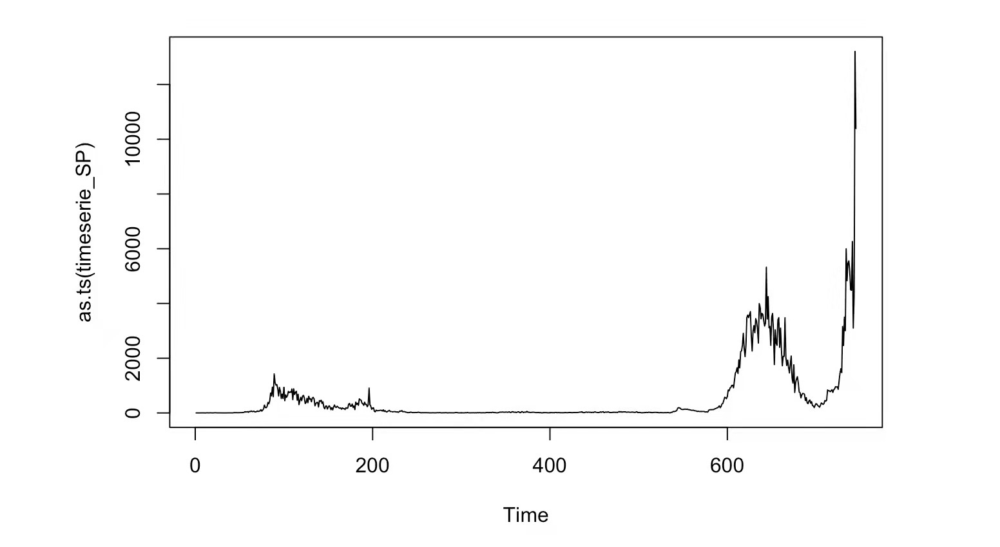

EDA.Rmd
The seasonality/periodic fluctuations can not be observed directly in this time series plot. So I will decompose the time series to see if there is seasonality/periodic.

There is an increase trend of the number of daily confirmed positive cases in Singapore.
This is a multiplicative time series.

Here the colours indicate the month of the variable(the number of daily confirmed positive cases in Singapore). The lines connect points in chronological order. The 12 lags all show positive relationship. The relationship is relatively strongly positive in lags 1 and 2, reflecting the high correlation in the data. This finding is consistent to the rapid changes of daily confirmed cases in Singapore.


ACF Plot: ACF describes how well the present value of the series is related with its past values. All lags in the ACF plot have significant acf values, indicating the time series is not stationary.
PACF Plot: The PACF plot finds correlation of the residuals. The PACF plot shows a strong relationship to the lag and a trailing off of correlation from the lag onwards. So it is good to apply Moving Average (MA) intuition to this time series data.


The comparison among original series and detrend series: The First Order difference plot shows that differencing is a good method for moving trend from the time series data. The Log Transformation plot shows obvious stationary compared with the original time series.

All ACF values in the original time series data are significant, indicating the time series is not stationary. The ACF plot of First Order Differencing shows that the data becomes stationary after detrending.


To detect the underlying trend, I smooth the time series using the "centred moving average". I used three MA windows for smoothing: week (7 days), month (30 days) and season (91 days). Comparing these 3 windows, the best MA window reflecting the underlying trend is one week. This is because the number of daily confirmed positive cases changes rapidly.